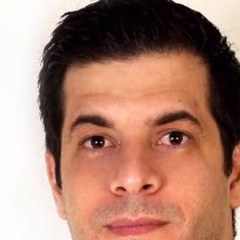

Início · Cirurgias · Reparadora
Reparadora: queimaduras, cicatrizes e reconstrução.
Queimaduras, correção de cicatrizes, reconstrução mamária e microcirurgia estão na lista do Dr. Sergio na SBCP. A informação é geral; a indicação é individual, definida em consulta.

Entenda
O que é a cirurgia reparadora
A cirurgia plástica reparadora trata deformidades causadas por doenças, tumores, traumas, queimaduras ou alterações congênitas. O objetivo principal é devolver função e forma.
Muitas vezes é planejada com outras especialidades, e em várias etapas.
Queimaduras
Queimaduras e suas sequelas
“Queimaduras são lesões dinâmicas, essa vermelhidão no centro da lesão pode corresponder a uma queimadura mais profunda, principalmente você falando que já tem 2 meses… você deve ser avaliada por um cirurgião plástico […].”
Resposta pública do Dr. Sergio na DoctoraliaDepois da fase aguda, a queimadura pode deixar cicatrizes que retraem a pele e limitam o movimento (bridas). Enxertos, retalhos e zetaplastias estão entre as técnicas usadas para liberar essas áreas.
Cicatrizes
Cicatrizes e queloides
“Certamente um cirurgião plástico poderá te auxiliar. Tratamentos com pomadas, fitas de silicone, infiltração com corticoide e uma nova cirurgia são geralmente as opções de tratamento.”
Resposta pública do Dr. Sergio na DoctoraliaCicatriz hipertrófica
Elevada, mas restrita ao local do corte; tende a melhorar com o tempo e com tratamento.
Queloide
Cresce além dos limites da cicatriz original e pode voltar; costuma pedir tratamento combinado.
Oncologia
Reconstrução depois do câncer
Depois da retirada de um tumor, a cirurgia plástica fecha a ferida e reconstrói a região: mama, pele da face, orelha, nariz. Em casos selecionados, a microcirurgia transfere tecido de outra parte do corpo com a própria circulação.
O Dr. Sergio fez a residência em Cirurgia Plástica no Hospital do Câncer I do INCA – Instituto Nacional de Câncer, no Rio de Janeiro, de 2014 a 2017, segundo o CNES.
Universidade
Ensino e pesquisa
Como professor de Medicina na UFOB, o Dr. Sergio orientou, em 2018, trabalhos de conclusão de curso sobre o uso de xenoenxertos em queimados e sobre a análise de úlceras de Marjolin em cicatriz de queimadura (dados abertos da UFOB).
Na consulta
O que levar
- Relatórios médicos e exames do tratamento anterior (cirurgia, biópsia, radioterapia).
- Fotos que mostrem a evolução da cicatriz, se tiver.
- A lista dos medicamentos em uso.
- As suas dúvidas, anotadas.
Dúvidas frequentes
Perguntas comuns
Cicatriz some com cirurgia?
Não. Toda cirurgia deixa cicatriz; a correção busca uma cicatriz menos aparente ou que não limite o movimento.
Queloide pode voltar depois de operado?
Pode. Por isso o tratamento costuma combinar cirurgia com outras medidas, como as que o Dr. Sergio cita na resposta acima.
Cirurgia reparadora é coberta por plano de saúde?
Muitas têm cobertura, conforme as regras do plano e a indicação médica. Confirme pelo WhatsApp as condições de atendimento.
Agende
A consulta acontece na sala 6010.
Atendimento com hora marcada no Centro Médico Hospital da Bahia, na Pituba. Combine dia e horário pelo WhatsApp (71) 99972-1674.